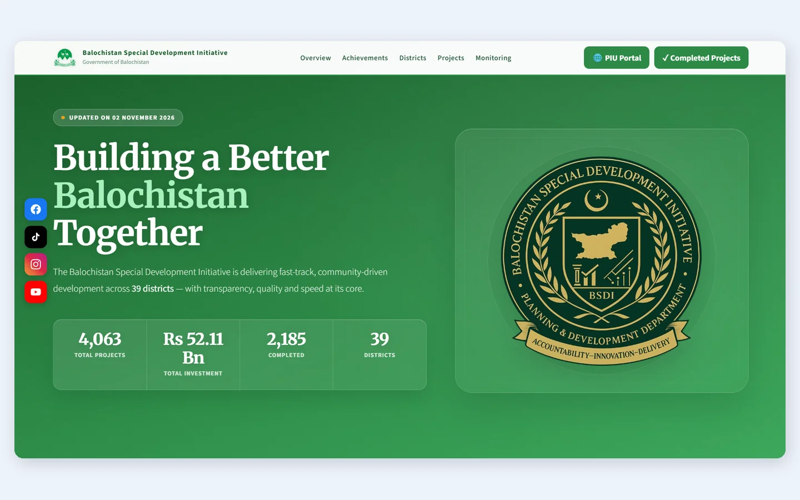
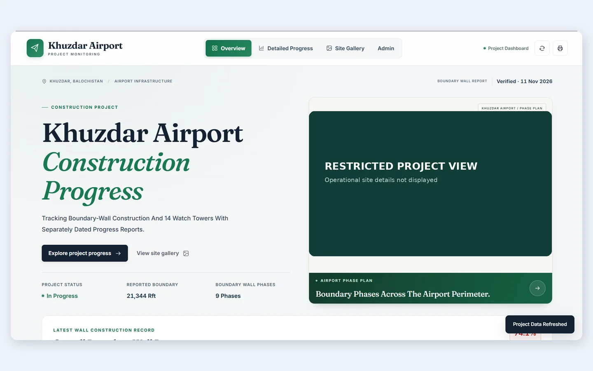
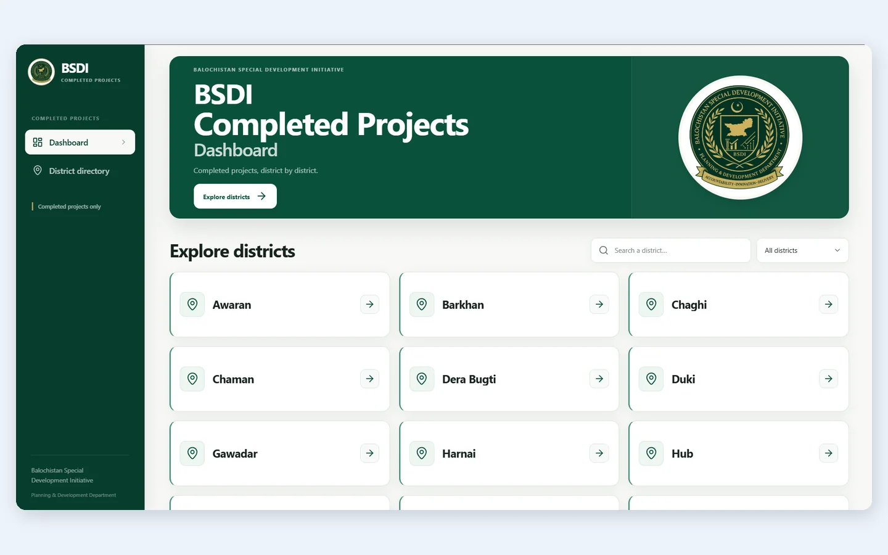

Selected work built around real operational needs.
Four documented systems spanning public-sector information, construction monitoring and district reporting. Each case study covers the problem, implementation choices and what can be reviewed publicly. Sensitive operational details stay private.
Public-sector website
BSDI Programme Website
Node.jsHTML / CSS / JavaScriptPublic website

Actual BSDI website screenshot supplied for this portfolio. Figures reflect the captured November 2026 view, not current live totals.
The need
Present the Balochistan Special Development Initiative's public programme information in a way visitors can navigate easily.
Project work
The website organizes a programme overview, achievements, district coverage, projects and monitoring information into connected public-facing sections.
Implementation
The repository documents a modular Node.js-served website with HTML, CSS and JavaScript, alongside baseline and server checks.
Access and review
The public website is accessible. Operational or private records are not reproduced in this case study.
What the interface demonstrates
Public programme information organized by Overview, Achievements, Districts, Projects and Monitoring.
Responsive navigation and structured programme statistics.
A public deployment visitors can independently explore.
Actual dashboard screenshot supplied for this portfolio. Report figures reflect the capture date, not a live feed.
The need
Support structured construction-progress monitoring and reporting for a road project.
Project work
The source includes an overview dashboard, activity views and data-input workflows for project controls.
Implementation
An ASP.NET Core application using C#, Razor Pages and SQLite, with separate Pages, Models and Services areas.
Access and review
The deployed system is for authorized users only. This case study does not expose project-control datasets, credentials or internal reports.
Engineering highlights
ASP.NET Core/Razor Pages structure with separation between pages, models and services.
Project progress views, activity tracking and structured data input.
Role-appropriate handling of an operational, restricted-access dashboard.
>
Restricted deployment: live access is available only to authorized users.
Restricted project system
Khuzdar Airport Monitoring
Node.jsProject dashboardsReporting

Actual interface screenshot; detailed site-plan information has been deliberately concealed before publication.
The need
Present construction progress across boundary-wall phases and watch-tower workstreams in a consistent reporting interface.
Project work
The repository describes overview screens, phase-level progress views, a site gallery and print-friendly reporting.
Implementation
A Node.js-based web application with data-backed views and protected administrative workflows; implementation and project data remain in the operational system.
Access and review
Live access remains restricted. The preview uses a supplied website screenshot; no sign-in credentials or private source records are included.
Engineering highlights
Overview and phase-level progress reporting in a single interface.
Site-gallery and print-oriented workflows.
Administrative functionality kept separate from public portfolio evidence.
>
Restricted deployment: live access is available only to authorized users.
Project reporting portal
BSDI Completed Projects Portal
Node.js / ViteMySQLDistrict reports

Actual BSDI Completed Projects portal screenshot supplied for this portfolio. Display is a static preview.
The need
Make completed development-project reporting material easier to browse by district.
Project work
The repository describes district-based presentation browsing, in-browser slide previews and administrative publishing workflows.
Implementation
The codebase uses Node.js, Vite, JavaScript and MySQL for API-backed portal workflows and persistent content metadata.
Access and review
The portal URL is public, though available content and administrative functions may require authorization. No private records or publishing access are linked here.
Engineering highlights
District-oriented navigation with search and selection controls.
Data-backed content and presentation-browsing workflows.
Administrative publishing support for maintaining project information.
Some projects have source examples or limited-access deployments. Their availability is stated here so a reference is not mistaken for a public live demo.
ForcesPrep
Study-platform project. Its domain currently shows a parked page, so it is not offered as a working demo.
Site Calculator
Offline Android calculation-tool project. A public store release is not claimed.
Electrical Calculator & Tools
Offline Android electrical-tool project. A public store release is not claimed.
Smart City Transportation Optimizer
Academic C++/Python algorithms work, including graph traversal and route optimization.